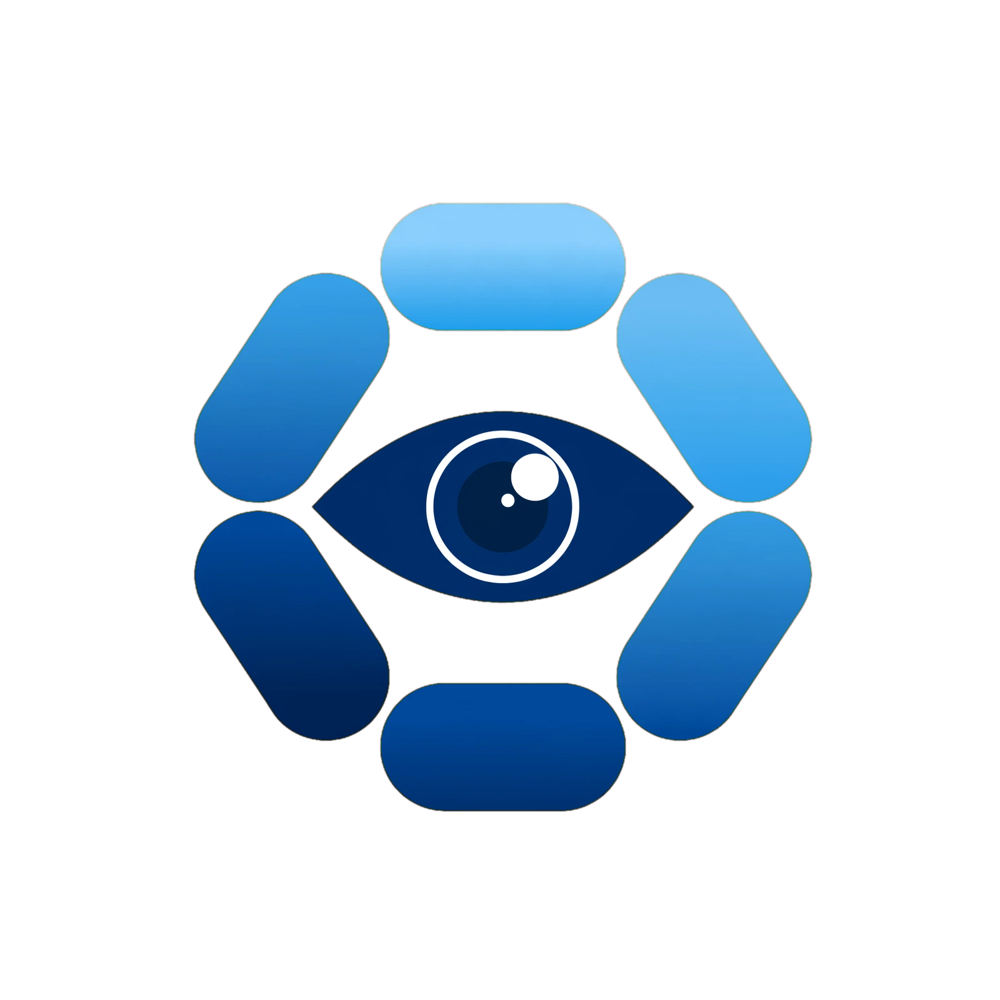
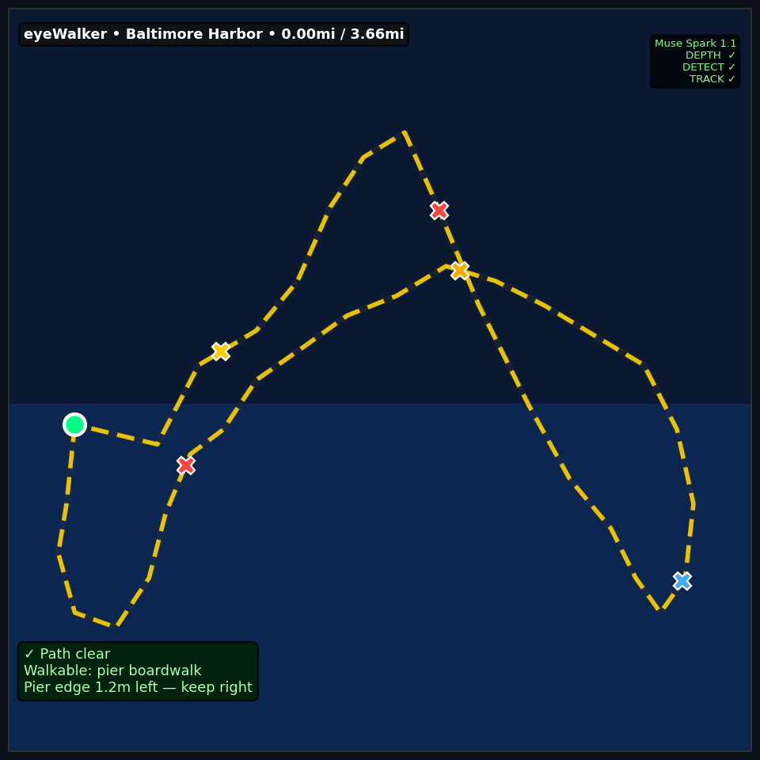

From NeuroAgent AI — for patients with rare neurologic diseases affecting vision and all other neurologic and ophthalmologic causes of visual impairment.
WHO: 2.2 billion people with vision impairment globally · at least 1 billion preventable or unaddressed · ~US$411B productivity loss. WHO fact sheet.

Code: github.com/aeyemovment/eyeWalker
(note the full spelling: eyeWalker — ends with r)